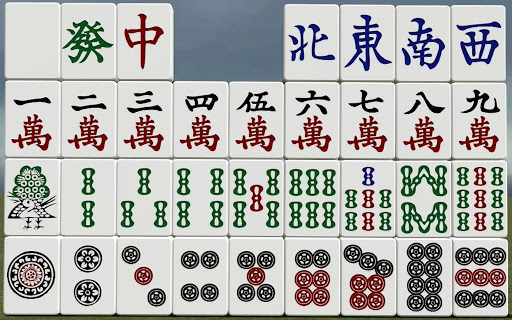
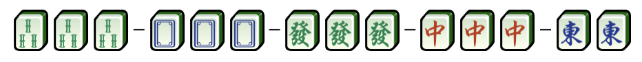
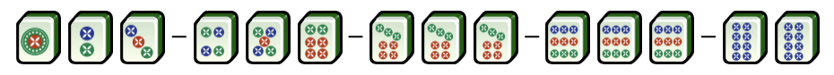
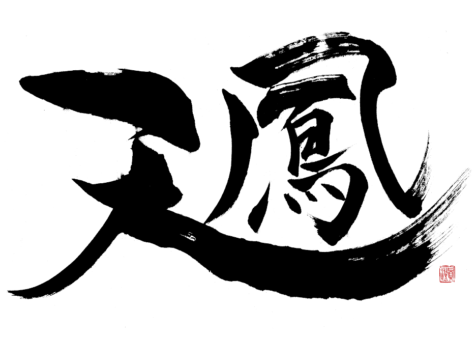

Mahjong Tiles
There are 34 different kinds of tiles, with four of each kind. Just like standard mahjong, there are three suits of tiles, pin (circles), sō (bamboo) and wan (characters), and unranked honor tiles (字牌 jihai). Honor tiles are further divided between wind tiles and dragon tiles. Some rules may have red number five tiles which work as dora that earn more han value. The flower and season tiles are omitted. Names for suit tiles follow the pattern of [number] + [suit], the numbers being Japanese pronunciations of the corresponding Chinese words.


Mahjong Rules
At the beginning, every player has 13 private tiles. The other tiles are shuffled as the wall. In every round, every player would draw a tile from the wall and discard a tile. Players can make a meld (open group) by calling for another player's discard. Melds in mahjong are groups of tiles within the player's hand, consisting of either a Pong (three identical tiles), a Kong (four identical tiles), a Chow (three Simple tiles all of the same suit, in numerical sequence), or Eyes (two identical tiles needed in a winning hand).

Tenhou Plateform
Tenhou 「天鳳」is a web-based mahjong platform in Japan with complete ranking system. We trained our AI by using the logs from Tenhou platform and also use it to evaluate our agent.
Other Mahjong AI
Suphx designed by Microsoft Research Asia